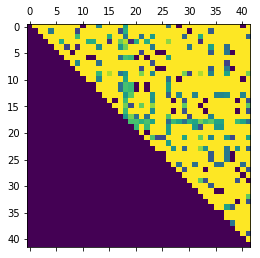
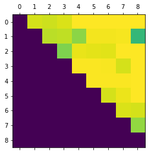

系列文章
这个是系列博客, 所有文章链接都列在这里, 并持续更新中。
篇章/词频矩阵
基于矩阵的分布表示通常又称为语义分布模型ＰＵ，该方法的主要思想是构建一个共现矩阵，矩阵的每行对应一个单词，每列表示一种上下文(通常是一篇文章)，而每个元素的值为对应单词与上下文在语料库中的共现次数。因此，每个单词可由矩阵中对应的行向量表示，而任意两个单词的相似性可直接由它们向量的相似性衡量。
下面就是一个共现矩阵, 每一行就是一个词向量:
| 文档1 | 文档2 | 文档3 | … | |
| 词1 | 1 | 0 | 3 | … |
| 词2 | 1 | 0 | … | |
| 词3 | 1 | 0 | 0 | … |
| . | 13 | 4 | 3 | … |
TF-IDF权重
TF-IDF基于上面提到的共现矩阵。从实际操作角度来说, TF-IDF只是对共现矩阵进行了加权。
传统经典模型TF-IDF以及一些基于它改进的方法:主要思想是通过提取文本中词语的权重来标识句子, 使文本构成向量表达。权重主要由两部分组成, 即该词语在文本中的频率 (term frequency, TF) 与反文档频率 (inverse document frequency, IDF) 。它衡量了一个词的常见程度，TF-IDF的假设是：如果某个词或短语在一篇文章中出现的频率高，并且在其他文章中很少出，那么它很可能就反映了这篇文章的特性，因此要提高它的权值。然而这种方法太过于依赖词语的共现, 加上本身短文本消息就由很少的字组成, 往往实际应用中得不到很好的效果。因为两个文本消息可能没有共同的词语但也可以语义相关, 相反如果两个文本消息有一些共同的词语也不一定语义相关。如”富士苹果很好吃, 赶紧买”, “苹果六代真好用, 赶紧买”和”乔布斯逝世了”。
语料库
因为中文语料库往往需要涉及分词, 之后分词后才能对词进行向量化, 但是目前分词还不是我们教程的内容, 所以为了降低学习难度, 我们使用英文作为这次教程的语料库, 这个语料库比较小, 只有几个文档, 我们直接写在代码里了:
1 | documents = ["Human machine interface for lab abc computer applications", |
计算词典和词频数矩阵
词典就是词到词id的映射, 这样我们可以用id(一个整数)表示一个词了。词频矩阵参考上面的表格。
1 | from collections import Counter |
1 | print(matrix[:10,:10]) |
[[0. 0. 0. 0. 0. 1. 0. 0. 0.]
[0. 0. 0. 1. 0. 0. 0. 0. 0.]
[0. 1. 0. 0. 0. 0. 0. 0. 0.]
[0. 0. 0. 0. 0. 0. 0. 1. 1.]
[0. 0. 1. 1. 0. 0. 0. 0. 0.]
[1. 0. 0. 0. 0. 0. 0. 0. 0.]
[0. 0. 0. 0. 0. 0. 0. 1. 0.]
[0. 0. 1. 0. 0. 0. 0. 0. 0.]
[1. 0. 0. 0. 0. 0. 0. 0. 0.]
[0. 1. 1. 2. 0. 0. 0. 0. 0.]]
{'unordered': 0,
'engineering': 1,
'opinion': 2,
'minors': 3,
'eps': 4,
'abc': 5,
'iv': 6,
'management': 7,
'machine': 8,
'system': 9,
'random': 10,
'ordering': 11,
'well': 12,
'the': 13,
'relation': 14,
'a': 15,
'perceived': 16,
'and': 17,
'of': 18,
'graph': 19,
'widths': 20,
'computer': 21,
'quasi': 22,
'user': 23,
'lab': 24,
'for': 25,
'trees': 26,
'to': 27,
'binary': 28,
'time': 29,
'testing': 30,
'in': 31,
'survey': 32,
'error': 33,
'human': 34,
'intersection': 35,
'paths': 36,
'interface': 37,
'applications': 38,
'measurement': 39,
'generation': 40,
'response': 41}
1 | print(dictionary) |
{'unordered': 0, 'engineering': 1, 'opinion': 2, 'minors': 3, 'eps': 4, 'abc': 5, 'iv': 6, 'management': 7, 'machine': 8, 'system': 9, 'random': 10, 'ordering': 11, 'well': 12, 'the': 13, 'relation': 14, 'a': 15, 'perceived': 16, 'and': 17, 'of': 18, 'graph': 19, 'widths': 20, 'computer': 21, 'quasi': 22, 'user': 23, 'lab': 24, 'for': 25, 'trees': 26, 'to': 27, 'binary': 28, 'time': 29, 'testing': 30, 'in': 31, 'survey': 32, 'error': 33, 'human': 34, 'intersection': 35, 'paths': 36, 'interface': 37, 'applications': 38, 'measurement': 39, 'generation': 40, 'response': 41}
TF-IDF权重计算
计算TF
词在每个文档中的频数已经由上面的步骤计算得到, 下面我们要计算TF(词频率term frequency), 它其实就是每个词的频数除以文档的总词数:
1 | def tf(matrix): |
[ 8. 10. 6. 8. 9. 7. 7. 10. 4.]
array([[0. , 0. , 0. , 0. , 0. ],
[0. , 0. , 0. , 0.125 , 0. ],
[0. , 0.1 , 0. , 0. , 0. ],
[0. , 0. , 0. , 0. , 0. ],
[0. , 0. , 0.16666667, 0.125 , 0. ]])
计算IDF
逆向文件频率（inverse document frequency，IDF）是一个词语普遍重要性的度量, 某一特定词语的idf，可以由总文件数目除以包含该词语之文件的数目，再将得到的商取以10为底的对数得到：
其中:
|D|: 语料库中的文档总数
分子: 包含词ti的文档数
下面我们用代码来计算idf:
1 | def idf(matrix): |
[1 1 1 2 2 1 1 1 1 3 1 1 1 3 1 2 1 2 6 3 1 2 1 3 1 1 3 1 1 2 1 1 2 1 2 1 1
2 1 1 1 2]
array([9. , 9. , 9. , 4.5, 4.5, 9. , 9. , 9. , 9. , 3. , 9. , 9. , 9. ,
3. , 9. , 4.5, 9. , 4.5, 1.5, 3. , 9. , 4.5, 9. , 3. , 9. , 9. ,
3. , 9. , 9. , 4.5, 9. , 9. , 4.5, 9. , 4.5, 9. , 9. , 4.5, 9. ,
9. , 9. , 4.5])
计算tf-idf
这个就很简单了:
下面是用代码实现的tf-idf函数:
1 | def tf_idf(matrx): |
[ 8. 10. 6. 8. 9. 7. 7. 10. 4.]
[1 1 1 2 2 1 1 1 1 3 1 1 1 3 1 2 1 2 6 3 1 2 1 3 1 1 3 1 1 2 1 1 2 1 2 1 1
2 1 1 1 2]
array([[0. , 0. , 0. , 0. , 0. ],
[0. , 0. , 0. , 1.125 , 0. ],
[0. , 0.9 , 0. , 0. , 0. ],
[0. , 0. , 0. , 0. , 0. ],
[0. , 0. , 0.75 , 0.5625, 0. ]])
词向量
我们得到了weights矩阵, 它的每一行就是一个词的词向量, 每一列就是一个文档的向量, 如果要计算词的相似性可以计算行向量的余弦值, 如果要计算文档的相似性, 我们可以计算列向量的余弦值。
下面分别计算词和文档的相关矩阵:
词相关矩阵
由于语料库太小了, 只有十几篇文档, 导致很多词的词向量都是相同的, 所以计算得到的词之间的相关很可能出现一些强相关, 但并不意味着他们由语义相关。但是在语料库比较大的时候, 很难出现两个词的词向量相同, 哪怕两个词是同义词也不太可能。
但是, 就今天的例子而言, 结果不是很好。大部分cosine值都是1附近, 说明词之间的相关几乎是0。这种方法的效果较差, 很难揭示语义相似性。
1 | %matplotlib inline |

文档相关矩阵
我们得到词向量的同时也得到了文档向量, 我们可以计算文档之间的相关性几乎是没有的, 这不符合我们的直观感受。
1 | def doc_relations(weights): |
[[0. 0.93513419 0.92300095 0.94191977 1. 1.
1. 1. 1. ]
[0. 0. 0.89788806 0.90372145 0.82532862 0.98323348
0.98114633 0.98558537 0.66476436]
[0. 0. 0. 0.80571111 0.96544268 0.96019457
0.95523946 1. 1. ]
[0. 0. 0. 0. 0.99348337 0.99249371
0.9915593 0.93546641 1. ]
[0. 0. 0. 0. 0. 0.99432578
0.99361943 0.99512172 1. ]
[0. 0. 0. 0. 0. 0.
0.93385392 0.97190435 1. ]
[0. 0. 0. 0. 0. 0.
0. 0.94313243 0.93468898]
[0. 0. 0. 0. 0. 0.
0. 0. 0.83771539]
[0. 0. 0. 0. 0. 0.
0. 0. 0. ]]

注意
本文由jupyter notebook转换而来, 您可以在这里下载notebook
有问题可以直接在下方留言
或者给我发邮件675495787[at]qq.com
请记住我的网址: mlln.cn 或者 jupyter.cn